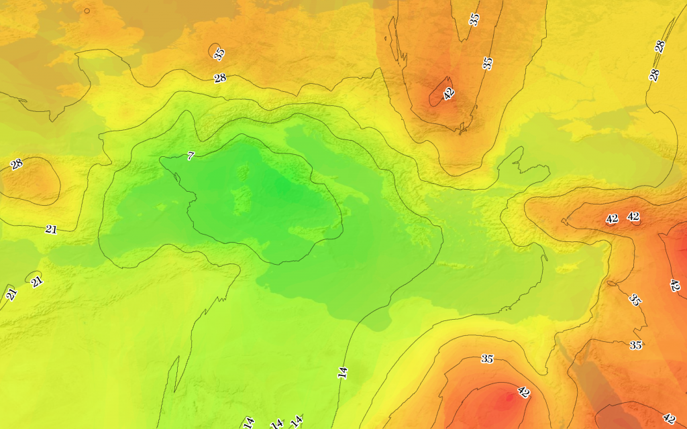
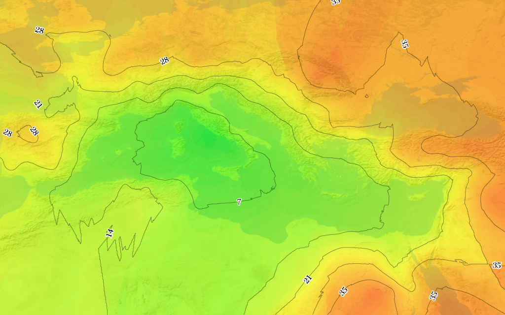
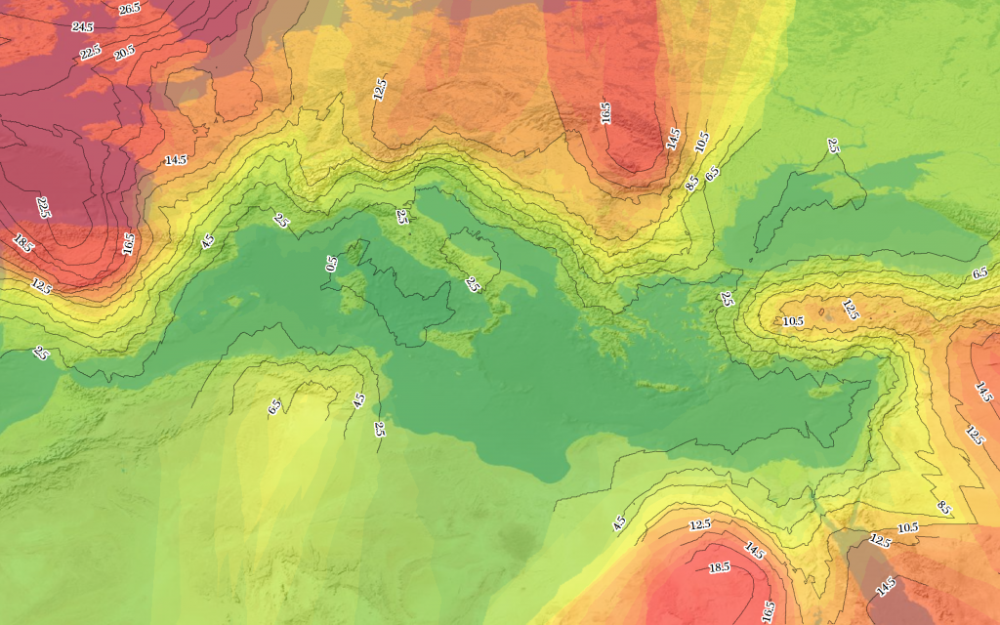
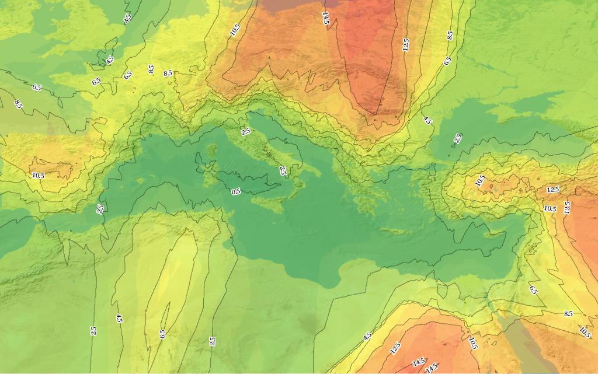

Isochrone maps are well-known enough to have their own Wikipedia page and Google Maps API tutorial. These represent the time to get to or from locations as a gradient and/or contour. Their usefulness in representing historical movement is obvious, as evidenced by these two isochrone maps of travel to and from Rome in July:


Isochrone map showing time in days to travel to Rome in July


Isochrone map showing time in days to travel from Rome in July
There is not, as far as I’m aware, a similar term for maps that display the expense of transporting goods to and from one or more locations on a map. Given isochrone (from isos chronos or “equal time”) there should be an equivalent ancient Greek word for expense to transport. It turns out, according to The Perseus Project, that there are at least three words for the expense related to transporting goods. Fortunately, since my ancient Greek is nonexistent, I can rely on Walter Scheidel and Dan-el Padilla in our Classics department to select the right one. Thus, I can now properly label my isophoretric maps, or maps that show “equal expense to transport goods”:


Isophoretric map showing the cost in denarii to transport a kilogram of grain to Rome in January


Isophoretric map showing the cost to transport grain to Rome in July
Naturally, these are drafts, and as such should not be utilized for navigational or capitalist purposes by time travelers. For instance, you’ll notice in the January isophoretric map that I’ve manually masked off the contour lines before the exaggerated (and simply wrong) interpolated values stretch into the regions for which we do not have data.